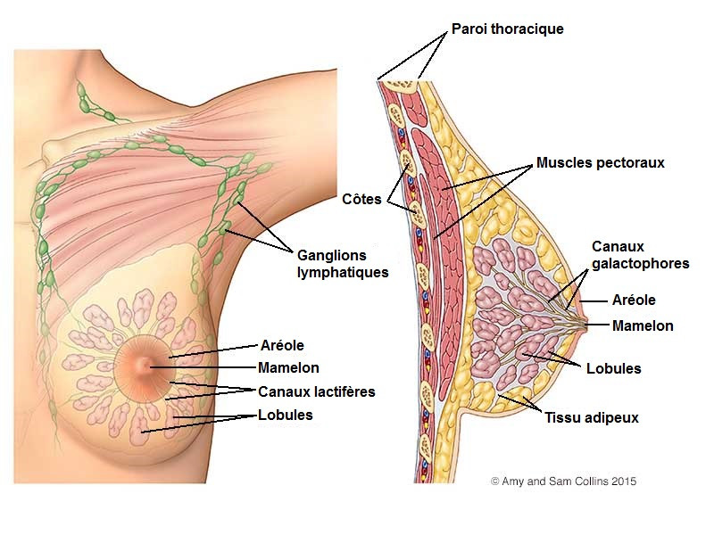
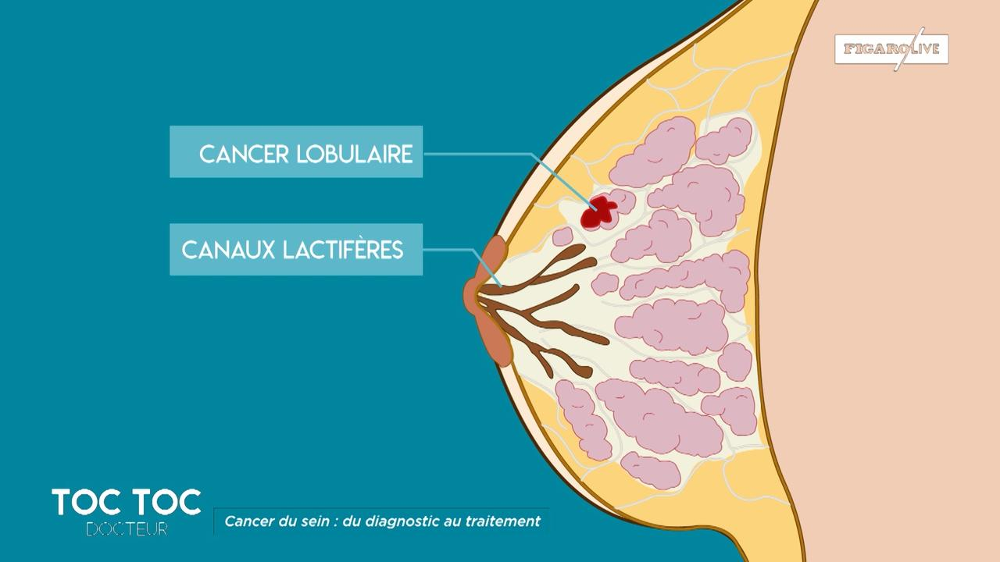

Le cancer du sein
Definitions
Le cancer
Le cancer est une tumeur (masse tissulaire anormale) liee a la proliferation anarchique et indefinie d’un clone cellulaire dit cancereux conduisant a la destruction du tissu original, a l’extension locale, regionale et generale de la tumeur et a la mort de l’individu en l’absence de traitement.
Le sein
Le sein est une glande hormonodependante chargee de la secretion du lait.

Signes cliniques : la palpation
Nodule dur, irregulier, indolore.
Asymetrie et anomalie du sein.
Retraction du mamelon.
Aspect peau d'orange.
Ecoulement anormal.
Ganglion axillaire.
Examens complementaires
Biopsie ganglionnaire : confirme le diagnostic.
Mammographie.
Traitements
Chirurgie associee a un curage axillaire : ablation d'un certains nombres de ganglions lymphatiques.
Conservatrice : Tumorectomie : exerese d'une tumeur petite ou benigne.
Radicale : Mastectomie : ablation totale du sein et/ou de la chaene ganglionnaire.
Autres traitements : radiotherapie, chimiotherapie, hormonotherapie.
Voir aussi :
La mammectomie
Module Gynecologie Maternite
Module Cancerologie